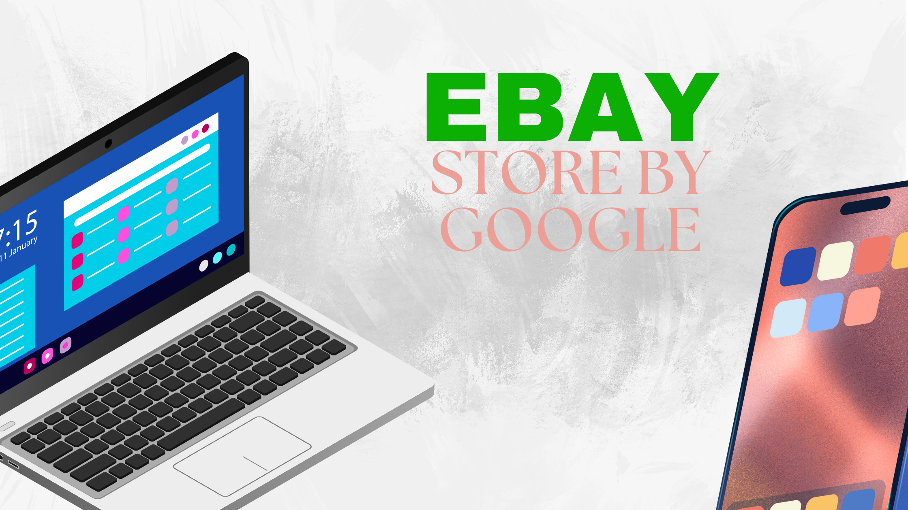
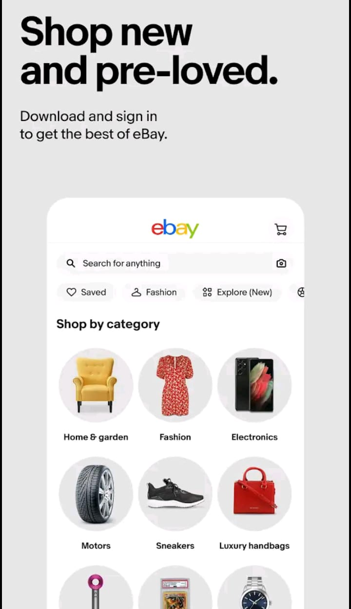

What is eBay?
It was also an online shopping platform where people pay for their purchases through one platform and get their items delivered to their homes.

Services and Tools:
It integrates the eBay buying process with eBay's Managed Payments service and allows buyers to be paid directly to the platform while giving sellers the ability to sell their items by simply filling out managed forms. It allows you to manage your sellers' angels and tag entries and offer better pricing through a variety of tools, including promotion, automated pricing and strategies, and data analysis. The site offers its buyers a guarantee facility on high-value items such as watches, shoes and other high-value items by filling up a form and registering their item with it. eBay has registered its own website in the Global Shipping Program, taking care of international shipping logistics to facilitate international shipping for many of the Kindergarten products sold in the U.S. to provide access to every home.
Challenges and Competition of eBay:
eBay faced many challenges as it had to compete with platforms like Amazon and Facebook Marketing on Alibaba, especially with its complement of services and Prime membership benefits. Due to the stiff competition offered by eBay, eBay has positioned itself well in the market. eBay has provided its customers with various policies to prevent various types of fake goods and sellers from buying and selling products in the market, who commit various types of frauds, which cause them to face various related problems. It also faces various challenges to present its brand in a good way. eBay offers a variety of products to meet the changing trends of its customers such as fixed price vs. auction formats and increasing mobile commerce demand for increased value and such products in the market. It provides the best access to people by providing it first on its platform when it is in high demand.
Ebay Playstore Download Link:
Download eBay App
Release Date:
17 Feb 2010
Updated & Version:
23 Oct 2024 / 6.182.0.1
How to create Ebay Store
Create your Ebay Seller Account by following these steps:
Sign up Seller Account
Sign up on EBay official site by using your google account or any other account suggested by Ebay. After verifying your account and completing all the necessary steps, you are ready for designing your store.
Select your store membership plan.
eBay offers a few different storage plans. Choosing the right plan depends on how much you plan to sell. If you're just starting out, the Basic plan is also a good option — it has a low monthly fee and enough features to get you started. When you get older, you can upgrade to a premium plan or Anchor plan to get more features and lower fees. Take a moment to think about what works for your business.
Create your own list
Now comes the fun part—taking inventory of your products! For each item, make sure that:
- Choose a descriptive name: Be clear and use keywords that people will search for.
- Add beautiful photos: The more your photos, the better. The more people you post, the more people will click on your item. Take photos in the best light and try to show the product from different angles.
- Write a friendly, detailed description: Tell customers everything they need to know about the product. Be straightforward and meaningful. If it is handmade or special in some way, focus on that!
- Set Pricing and Shipping: Choose whether you want a fixed price or an auction format. Then choose your shipping options. Offering free shipping can sometimes help increase your inventory, but don't forget to take that price into consideration.
Set up payment and shipping
eBay makes it easy to manage payments with PayPal or credit/debit cards. Set your preferred payment method so you can receive your money securely. For delivery, you can pay a flat rate or calculate shipping costs based on the buyer's location. If you can, consider offering free shipping to attract more buyers. This is something that's popular on eBay and can help your product stand out.
Start your own store
When everything is ready, it's time to start your store! Share your store link on social media. Email a friend and spread the news. The more people who know about your store, the better!
How to get more orders on Ebay
Getting more eBay orders takes a combination of strategy, consistency, and great customer service. It's about making your store visible, your inventory attractive, and building trust with your buyers. The following helpful and humane tips will help you increase your sales and get more orders:
- Optimize your list with keywords: Think about the words that potential buyers use to find your product. Include these keywords in your product title, description, and tags. Be specific but natural. Don't enter keywords yet, but make sure your items are easy for people to find. For example, instead of just showing "handbags," try using specific terms like "women's leather crossbody handbags."
- Add high quality photos: People cannot touch or try your products, so photos are everything. Take clear, well-exposed photos from multiple angles that show off all the details. If possible, include lifestyle shots, such as holding a bag or modeling a shirt. This helps potential buyers visualize themselves with the product, increasing the likelihood that they will hit the "buy" button.
- Offer free shipping: Free shipping is a big seller. eBay buyers are often interested in items with free shipping because it makes pricing easier and more transparent. If you are worried about gross profit, you can combine shipping costs in the product price. But offering free shipping will make your inventory stand out.
- Organize promotions and discounts: eBay has built-in tools for driving sales, offering discounts, or bundling products. Use these to your advantage. You can create a limited-time offer, set up "buy more, save more" offers, or offer coupons to encourage people to buy more. These promotions can catch eyeballs and create a sense of urgency for shoppers.
- Use eBay promotions: Postings can pay to have your products appear in search results or on the home page. You can set a budget and percentage for promotional fees. If you sell products in a competitive category, this can be a smart way to get more buyers to view your listing.
- Create an attractive storefront: Make sure your store looks professional and friendly. Customize your store's design with a clear and easy-to-use layout. Add an attractive banner and keep your brand consistent.
- Quick and professional response: Customer service is key to getting repeat orders and positive feedback. Reply to buyers' messages immediately, regardless of whether they ask for more details, check delivery, or request help with products. The quicker and friendlier your response is, the better. The more confident the buyer will feel in their purchase.
How to manage Ebay Store
- At the top of the list: Check and update your stock on eBay regularly—selling too much can lead to negative feedback. So please make sure your inventory is accurate and up to date. If you manage multiple sales platforms, consider using an inventory management tool to keep track of everything in one place.
- Improved order processing: eBay offers an automatic order delivery feature. So take advantage of these features to save time. Set up automatic payment processing and use eBay labels to print shipments directly from your dashboard.
- Emphasis on customer service: Respond to customer inquiries quickly and courteously, whether they are asking about a specific product, shipping, or returns.
- Keep your list fresh and accurate: Update your list regularly to keep it accurate and attractive. Change product images, descriptions, and keywords as needed to stay relevant and visible in search results. It can also help your products stand out, especially if you are in a highly competitive group.